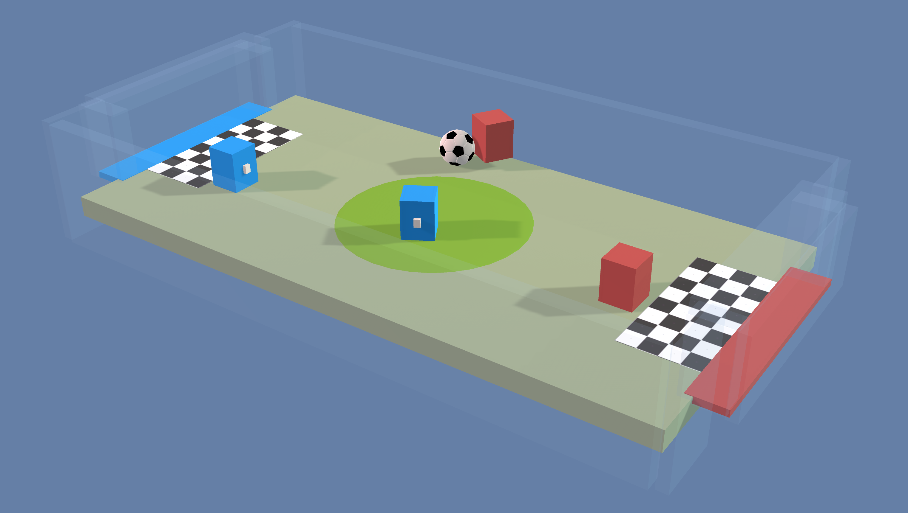

Example Learning Environments
Unity ML-Agents contains an expanding set of example environments which
demonstrate various features of the platform. Environments are located in
unity-environment/Assets/ML-Agents/Examples and summarized below.
Additionally, our
first ML Challenge
contains environments created by the community.
This page only overviews the example environments we provide. To learn more on how to design and build your own environments see our Making a New Learning Environment page.
If you would like to contribute environments, please see our contribution guidelines page.
Basic

- Set-up: A linear movement task where the agent must move left or right to rewarding states.
- Goal: Move to the most reward state.
- Agents: The environment contains one agent linked to a single brain.
- Agent Reward Function:
- +0.1 for arriving at suboptimal state.
- +1.0 for arriving at optimal state.
- Brains: One brain with the following observation/action space.
- Vector Observation space: (Discrete) One variable corresponding to current state.
- Vector Action space: (Discrete) Two possible actions (Move left, move right).
- Visual Observations: 0
- Reset Parameters: None
3DBall: 3D Balance Ball

- Set-up: A balance-ball task, where the agent controls the platform.
- Goal: The agent must balance the platform in order to keep the ball on it for as long as possible.
- Agents: The environment contains 12 agents of the same kind, all linked to a single brain.
- Agent Reward Function:
- +0.1 for every step the ball remains on the platform.
- -1.0 if the ball falls from the platform.
- Brains: One brain with the following observation/action space.
- Vector Observation space: (Continuous) 8 variables corresponding to rotation of platform, and position, rotation, and velocity of ball.
- Vector Observation space (Hard Version): (Continuous) 5 variables corresponding to rotation of platform and position and rotation of ball.
- Vector Action space: (Continuous) Size of 2, with one value corresponding to X-rotation, and the other to Z-rotation.
- Visual Observations: 0
- Reset Parameters: None
GridWorld
- Set-up: A version of the classic grid-world task. Scene contains agent, goal, and obstacles.
- Goal: The agent must navigate the grid to the goal while avoiding the obstacles.
- Agents: The environment contains one agent linked to a single brain.
- Agent Reward Function:
- -0.01 for every step.
- +1.0 if the agent navigates to the goal position of the grid (episode ends).
- -1.0 if the agent navigates to an obstacle (episode ends).
- Brains: One brain with the following observation/action space.
- Vector Observation space: None
- Vector Action space: (Discrete) Size of 4, corresponding to movement in cardinal directions.
- Visual Observations: One corresponding to top-down view of GridWorld.
- Reset Parameters: Three, corresponding to grid size, number of obstacles, and number of goals.
Tennis

- Set-up: Two-player game where agents control rackets to bounce ball over a net.
- Goal: The agents must bounce ball between one another while not dropping or sending ball out of bounds.
- Agents: The environment contains two agent linked to a single brain named TennisBrain. After training you can attach another brain named MyBrain to one of the agent to play against your trained model.
- Agent Reward Function (independent):
- +0.1 To agent when hitting ball over net.
- -0.1 To agent who let ball hit their ground, or hit ball out of bounds.
- Brains: One brain with the following observation/action space.
- Vector Observation space: (Continuous) 8 variables corresponding to position and velocity of ball and racket.
- Vector Action space: (Continuous) Size of 2, corresponding to movement toward net or away from net, and jumping.
- Visual Observations: None
- Reset Parameters: One, corresponding to size of ball.
Push Block
- Set-up: A platforming environment where the agent can push a block around.
- Goal: The agent must push the block to the goal.
- Agents: The environment contains one agent linked to a single brain.
- Agent Reward Function:
- -0.0025 for every step.
- +1.0 if the block touches the goal.
- Brains: One brain with the following observation/action space.
- Vector Observation space: (Continuous) 15 variables corresponding to position and velocities of agent, block, and goal.
- Vector Action space: (Continuous) Size of 2, corresponding to movement in X and Z directions.
- Visual Observations: None.
- Reset Parameters: None.
Wall Jump
- Set-up: A platforming environment where the agent can jump over a wall.
- Goal: The agent must use the block to scale the wall and reach the goal.
- Agents: The environment contains one agent linked to two different brains. The brain the agent is linked to changes depending on the height of the wall.
- Agent Reward Function:
- -0.0005 for every step.
- +1.0 if the agent touches the goal.
- -1.0 if the agent falls off the platform.
- Brains: Two brains, each with the following observation/action space.
- Vector Observation space: (Continuous) 16 variables corresponding to position and velocities of agent, block, and goal, plus the height of the wall.
- Vector Action space: (Discrete) Size of 74, corresponding to 14 raycasts each detecting 4 possible objects. plus the global position of the agent and whether or not the agent is grounded.
- Visual Observations: None.
- Reset Parameters: 4, corresponding to the height of the possible walls.
Reacher

- Set-up: Double-jointed arm which can move to target locations.
- Goal: The agents must move it's hand to the goal location, and keep it there.
- Agents: The environment contains 32 agent linked to a single brain.
- Agent Reward Function (independent):
- +0.1 Each step agent's hand is in goal location.
- Brains: One brain with the following observation/action space.
- Vector Observation space: (Continuous) 26 variables corresponding to position, rotation, velocity, and angular velocities of the two arm Rigidbodies.
- Vector Action space: (Continuous) Size of 4, corresponding to torque applicable to two joints.
- Visual Observations: None
- Reset Parameters: Two, corresponding to goal size, and goal movement speed.
Crawler

- Set-up: A creature with 4 arms and 4 forearms.
- Goal: The agents must move its body along the x axis without falling.
- Agents: The environment contains 3 agent linked to a single brain.
- Agent Reward Function (independent):
- +1 times velocity in the x direction
- -1 for falling.
- -0.01 times the action squared
- -0.05 times y position change
- -0.05 times velocity in the z direction
- Brains: One brain with the following observation/action space.
- Vector Observation space: (Continuous) 117 variables corresponding to position, rotation, velocity, and angular velocities of each limb plus the acceleration and angular acceleration of the body.
- Vector Action space: (Continuous) Size of 12, corresponding to torque applicable to 12 joints.
- Visual Observations: None
- Reset Parameters: None
Banana Collector

- Set-up: A multi-agent environment where agents compete to collect bananas.
- Goal: The agents must learn to move to as many yellow bananas as possible while avoiding red bananas.
- Agents: The environment contains 10 agents linked to a single brain.
- Agent Reward Function (independent):
- +1 for interaction with yellow banana
- -1 for interaction with red banana.
- Brains: One brain with the following observation/action space.
- Vector Observation space: (Continuous) 51 corresponding to velocity of agent, plus ray-based perception of objects around agent's forward direction.
- Vector Action space: (Continuous) Size of 3, corresponding to forward movement, y-axis rotation, and whether to use laser to disable other agents.
- Visual Observations (Optional): First-person view for each agent.
- Reset Parameters: None
Hallway
- Set-up: Environment where the agent needs to find information in a room, remember it, and use it to move to the correct goal.
- Goal: Move to the goal which corresponds to the color of the block in the room.
- Agents: The environment contains one agent linked to a single brain.
- Agent Reward Function (independent):
- +1 For moving to correct goal.
- -0.1 For moving to incorrect goal.
- -0.0003 Existential penalty.
- Brains: One brain with the following observation/action space:
- Vector Observation space: (Continuous) 30 corresponding to local ray-casts detecting objects, goals, and walls.
- Vector Action space: (Discrete) 4 corresponding to agent rotation and forward/backward movement.
- Visual Observations (Optional): First-person view for the agent.
- Reset Parameters: None
Bouncer
- Set-up: Environment where the agent needs on-demand decision making. The agent must decide how perform its next bounce only when it touches the ground.
- Goal: Catch the floating banana. Only has a limited number of jumps.
- Agents: The environment contains one agent linked to a single brain.
- Agent Reward Function (independent):
- +1 For catching the banana.
- -1 For bouncing out of bounds.
- -0.05 Times the action squared. Energy expenditure penalty.
- Brains: One brain with the following observation/action space:
- Vector Observation space: (Continuous) 6 corresponding to local position of agent and banana.
- Vector Action space: (Continuous) 3 corresponding to agent force applied for the jump.
- Visual Observations: None
- Reset Parameters: None
Soccer Twos

- Set-up: Environment where four agents compete in a 2 vs 2 toy soccer game.
- Goal:
- Striker: Get the ball into the opponent's goal.
- Goalie: Prevent the ball from entering its own goal.
- Agents: The environment contains four agents, with two linked to one brain (strikers) and two linked to another (goalies).
- Agent Reward Function (dependent):
- Striker:
- +1 When ball enters opponent's goal.
- -0.1 When ball enters own team's goal.
- -0.001 Existential penalty.
- Goalie:
- -1 When ball enters team's goal.
- +0.1 When ball enters opponents goal.
- +0.001 Existential bonus.
- Striker:
- Brains: Two brain with the following observation/action space:
- Vector Observation space: (Continuous) 112 corresponding to local 14 ray casts, each detecting 7 possible object types, along with the object's distance. Perception is in 180 degree view from front of agent.
- Vector Action space: (Discrete)
- Striker: 6 corresponding to forward, backward, sideways movement, as well as rotation.
- Goalie: 4 corresponding to forward, backward, sideways movement.
- Visual Observations: None
- Reset Parameters: None